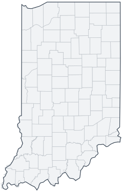

Historical county changes, 1790–1990 › Indiana

| Name↕ | Unit↕ | Existed↕ | FIPS↕ |
|---|---|---|---|
| Adams County | county | 1840–1990 | 18001 |
| Allen County | county | 1830–1990 | 18003 |
| Bartholomew County | county | 1830–1990 | 18005 |
| Benton County | county | 1850–1990 | 18007 |
| Blackford County | county | 1840–1990 | 18009 |
| Boone County | county | 1830–1990 | 18011 |
| Brown County | county | 1840–1990 | 18013 |
| Carroll County | county | 1830–1990 | 18015 |
| Cass County | county | 1830–1990 | 18017 |
| Clark County | county | 1810–1990 | 18019 |
| Clay County | county | 1830–1990 | 18021 |
| Clinton County | county | 1830–1990 | 18023 |
| Crawford County | county | 1820–1990 | 18025 |
| Daviess County | county | 1820–1990 | 18027 |
| De Kalb County | county | 1840–1990 | 18033 |
| Dearborn County | county | 1810–1990 | 18029 |
| Decatur County | county | 1830–1990 | 18031 |
| Delaware County | county | 1820–1990 | 18035 |
| Dubois County | county | 1820–1990 | 18037 |
| Elkhart County | county | 1830–1990 | 18039 |
| Fayette County | county | 1820–1990 | 18041 |
| Floyd County | county | 1820–1990 | 18043 |
| Fountain County | county | 1830–1990 | 18045 |
| Franklin County | county | 1820–1990 | 18047 |
| Fulton County | county | 1840–1990 | 18049 |
| Gibson County | county | 1820–1990 | 18051 |
| Grant County | county | 1840–1990 | 18053 |
| Greene County | county | 1830–1990 | 18055 |
| Hamilton County | county | 1830–1990 | 18057 |
| Hancock County | county | 1830–1990 | 18059 |
| Harrison County | county | 1810–1990 | 18061 |
| Hendricks County | county | 1830–1990 | 18063 |
| Henry County | county | 1830–1990 | 18065 |
| Howard County | county | 1850–1990 | 18067 |
| Huntington County | county | 1840–1990 | 18069 |
| Jackson County | county | 1820–1990 | 18071 |
| Jasper County | county | 1840–1990 | 18073 |
| Jay County | county | 1840–1990 | 18075 |
| Jefferson County | county | 1820–1990 | 18077 |
| Jennings County | county | 1820–1990 | 18079 |
| Johnson County | county | 1830–1990 | 18081 |
| Knox County | county | 1800–1990 | 18083 |
| Kosciusko County | county | 1840–1990 | 18085 |
| La Porte County | county | 1840–1990 | 18091 |
| Lagrange County | county | 1840–1990 | 18087 |
| Lake County | county | 1840–1990 | 18089 |
| Lawrence County | county | 1820–1990 | 18093 |
| Madison County | county | 1830–1990 | 18095 |
| Marion County | county | 1830–1990 | 18097 |
| Marshall County | county | 1840–1990 | 18099 |
| Martin County | county | 1820–1990 | 18101 |
| Miami County | county | 1840–1990 | 18103 |
| Monroe County | county | 1820–1990 | 18105 |
| Montgomery County | county | 1830–1990 | 18107 |
| Morgan County | county | 1830–1990 | 18109 |
| Newton County | county | 1860–1990 | 18111 |
| Noble County | county | 1840–1990 | 18113 |
| Ohio County | county | 1850–1990 | 18115 |
| Orange County | county | 1820–1990 | 18117 |
| Owen County | county | 1820–1990 | 18119 |
| Parke | county | 1830–1990 | 18121 |
| Perry County | county | 1820–1990 | 18123 |
| Pike County | county | 1820–1990 | 18125 |
| Porter County | county | 1840–1990 | 18127 |
| Posey County | county | 1820–1990 | 18129 |
| Pulaski County | county | 1840–1990 | 18131 |
| Putnam County | county | 1830–1990 | 18133 |
| Randolph County | county | 1820–1990 | 18135 |
| Ripley County | county | 1820–1990 | 18137 |
| Rush County | county | 1830–1990 | 18139 |
| Scott County | county | 1820–1990 | 18143 |
| Shelby County | county | 1830–1990 | 18145 |
| Spencer County | county | 1820–1990 | 18147 |
| St. Joseph County | county | 1830–1990 | 18141 |
| Starke County | county | 1840–1990 | 18149 |
| Steuben County | county | 1840–1990 | 18151 |
| Sullivan County | county | 1820–1990 | 18153 |
| Switzerland County | county | 1820–1990 | 18155 |
| Tippecanoe County | county | 1830–1990 | 18157 |
| Tipton County | county | 1850–1990 | 18159 |
| Union County | county | 1830–1990 | 18161 |
| Vanderburgh County | county | 1820–1990 | 18163 |
| Vermillion County | county | 1830–1990 | 18165 |
| Vigo County | county | 1820–1990 | 18167 |
| Wabash County | county | 1840–1990 | 18169 |
| Wabash County (old) | county | 1820 | 18167.1 |
| Warren County | county | 1830–1990 | 18171 |
| Warrick County | county | 1820–1990 | 18173 |
| Washington County | county | 1820–1990 | 18175 |
| Wayne County | county | 1820–1990 | 18177 |
| Wells County | county | 1840–1990 | 18179 |
| White County | county | 1840–1990 | 18181 |
| Whitley County | county | 1840–1990 | 18183 |
Note: Decimals in FIPS codes come from Forstall, who gives every county a code, including counties that no longer exist. A county abolished between 1930 and 1990 keeps the code it had. However, a county which was abolished prior to 1930 never received a code. Such a county is given the code of the county which precedes it alphabetically plus a decimal to hold its place in the list.
Source: Richard L. Forstall (1996), Population of States and Counties of the United States: 1790 to 1990, U.S. Bureau of the Census (public domain). Always check a row against the scan it links to.